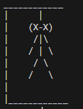

Using character that I found on the keyboard, I made a simple hangman character, for when the player has 0 lives left, and to make the other steps for when the player has more lives, I will take away one body part at a time.
This is what it looks like in the game and from looking at it, I think that is would be good, for a child friendly hangman game, because it can be recognised as hangman, without being to realistic.
"Yes, I think that the hangman looks good for a child friendly hangman game. This is because it doesn't actually look like a person but it's still recognisable."
"Yes, because it's simple, and easy to look at."
"No, I think that it is good as it is."
"I think that its ok."
I decided to not change the hangman, because I think that it looks very good, but not to realistic so that children wouldnt get scared.
Using while, I created a loop, so that people who want to play again can do so, and for people who dont want to play again, It will say good bye to them.
This is what it looks like in game when the player is being asked if they want to play again.
"Yes, I think that the hangman looks good for a child friendly hangman game. This is because it doesn't actually look like a person but it's still recognisable."
"Yes, because it's simple, and easy to look at."
"No, I think that it is good as it is."
"I think that its ok."
I decided to not change the hangman, because I think that it looks very good, but not to realistic so that children wouldnt get scared.